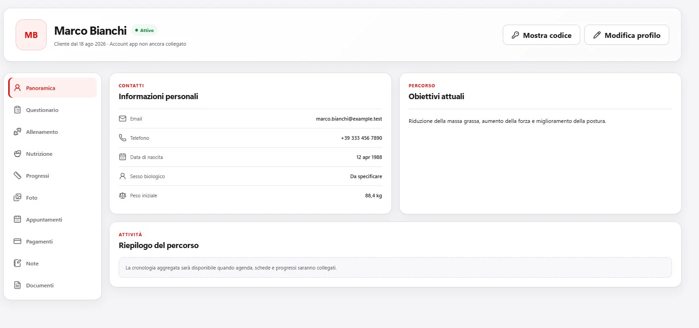
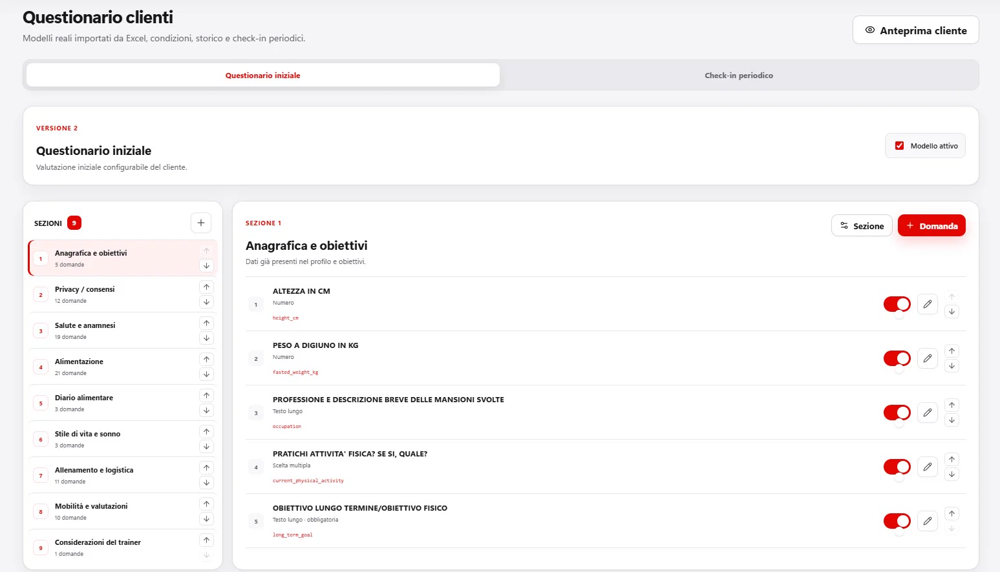
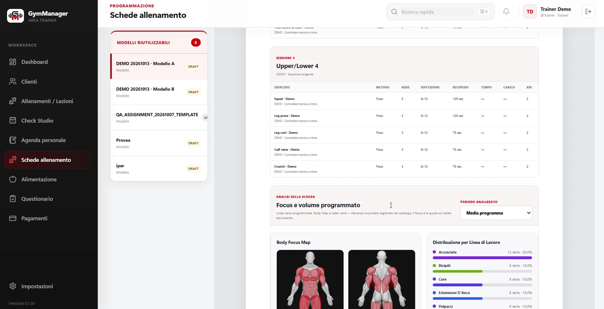
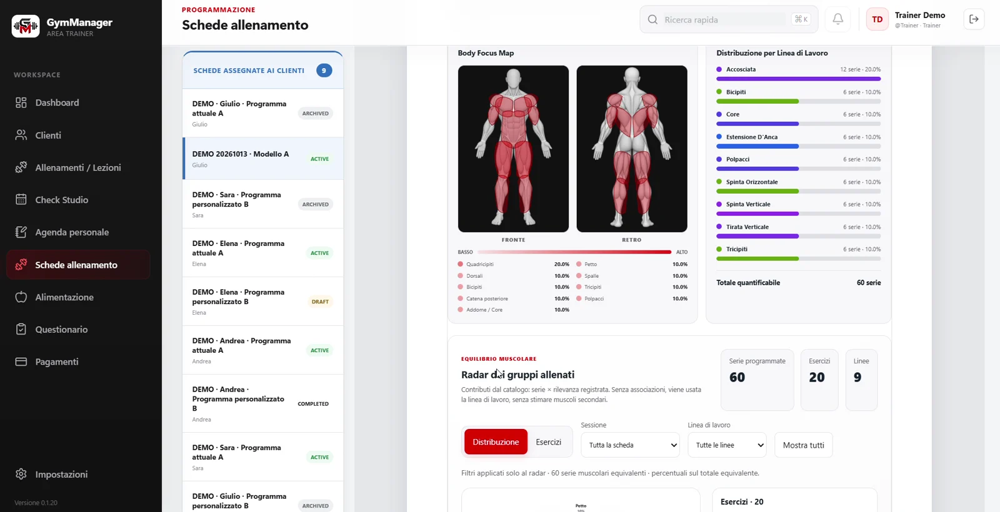
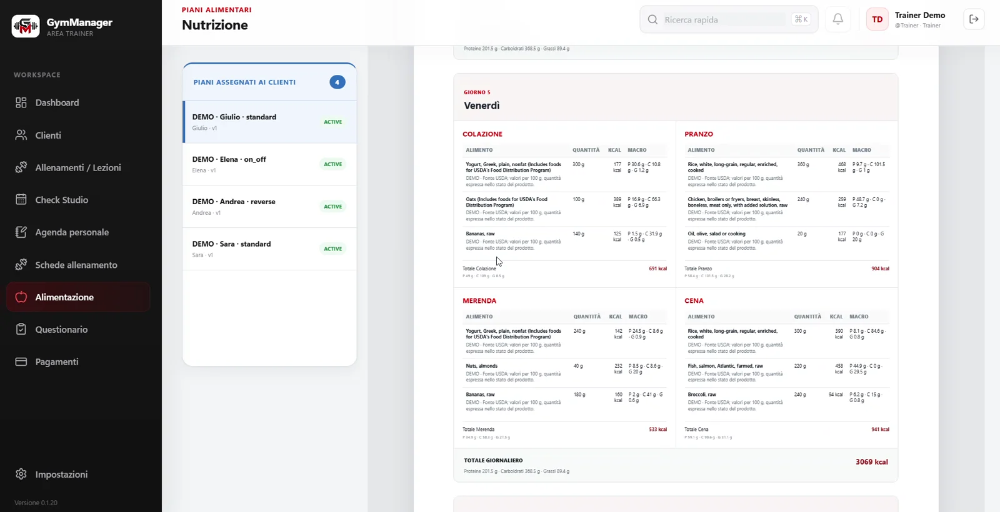
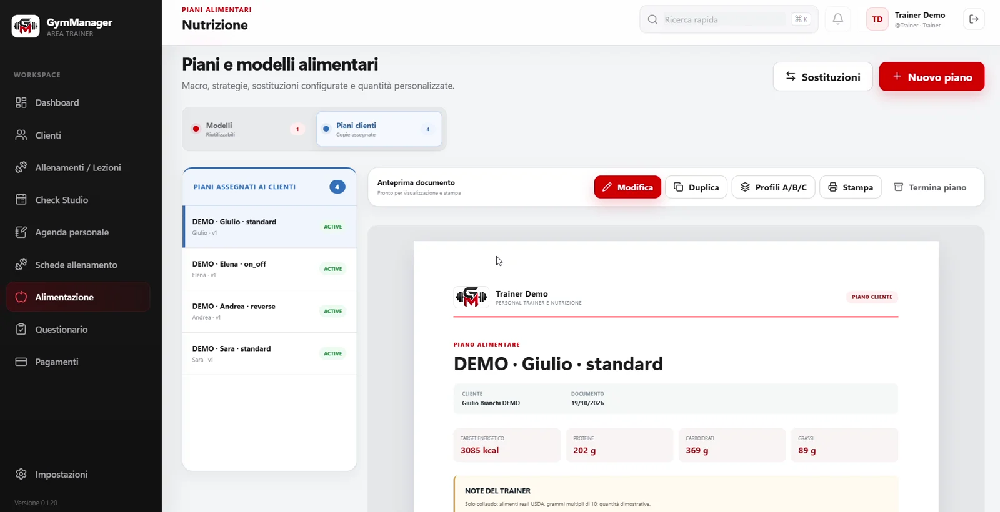
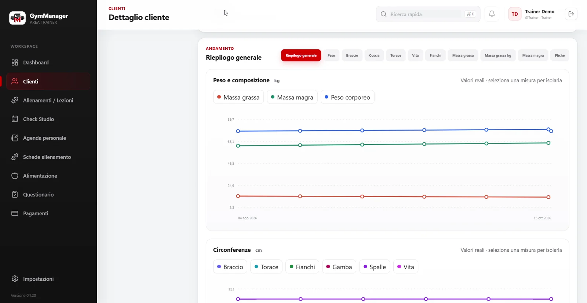
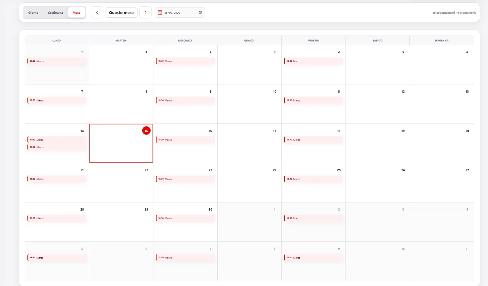
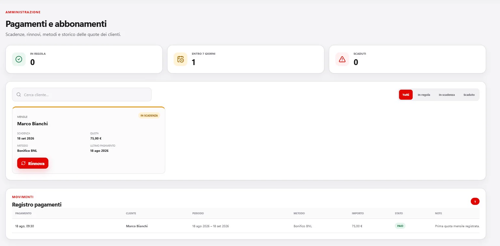

Modelli Allenamento
Una struttura di sessioni ed esercizi da duplicare, completare e assegnare nel periodo previsto.
GymManager accompagna il lavoro del Trainer dalla raccolta iniziale alla programmazione, fino all'organizzazione delle attività e alla lettura dei risultati. Qui lo vedi nelle schermate reali, con dati demo.
Esplora la panoramica DesktopLa scheda riunisce identità, obiettivi e collegamenti al lavoro attivo, evitando che allenamento, nutrizione e storico diventino archivi separati.


Il Trainer può configurare questionari iniziali e check-in periodici, organizzando domande, sezioni e condizioni di visibilità. L'anteprima permette di controllare il flusso prima dell'uso.
Crea modelli di allenamento, componi le giornate e assegna una scheda al Cliente. Ogni esercizio mantiene serie, ripetizioni, note e metodo previsto dalla programmazione.


La mappa corporea e l'analisi dei volumi aiutano a leggere la distribuzione dello stimolo previsto nella scheda. È uno strumento di supporto alla revisione del programma, non una valutazione medica.
Costruisci giornate e pasti, cerca gli alimenti e definisci quantità coerenti. GymManager supporta sia una settimana Standard sia la distinzione tra giornate ON e OFF.

I modelli riducono il lavoro ripetitivo senza trasformare il programma in qualcosa di generico: la copia assegnata può essere adattata al singolo Cliente.
Una struttura di sessioni ed esercizi da duplicare, completare e assegnare nel periodo previsto.
Una base di giornate e pasti da rivedere nelle quantità prima di creare il piano Cliente.

Assegna e rivedi i programmi nel contesto del Cliente. Nell'allenamento, le progressioni multi-settimana permettono di organizzare prescrizioni e note per ciascuna fase; nella nutrizione, il piano mantiene il proprio riepilogo energetico.
Le rilevazioni collegano una data a peso, misure e note. I grafici permettono di confrontare l'evoluzione del percorso; la registrazione mostra anche il dettaglio della plicometria su dati sintetici.


Il calendario mostra gli appuntamenti per giorno, settimana o mese. L'agenda personale mantiene separate le attività operative, mentre l'area pagamenti raccoglie stato e rinnovi.
Dalla scheda Cliente puoi consultare lo stato dell'abbonamento, la prossima scadenza e lo storico dei pagamenti registrati.
Gli importi nell'immagine appartengono a un esempio di pagamento del Cliente demo. Non sono il prezzo di GymManager.

Versione e installer vengono recuperati automaticamente dalla distribuzione ufficiale.